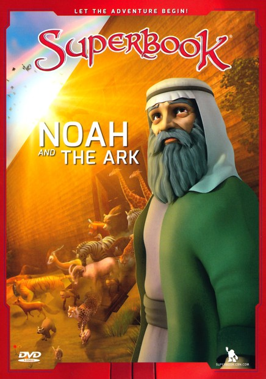
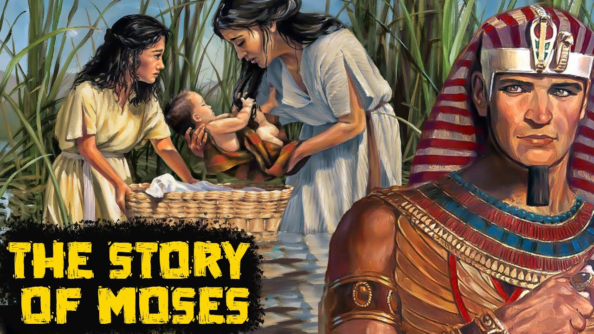
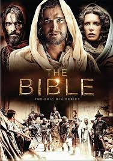
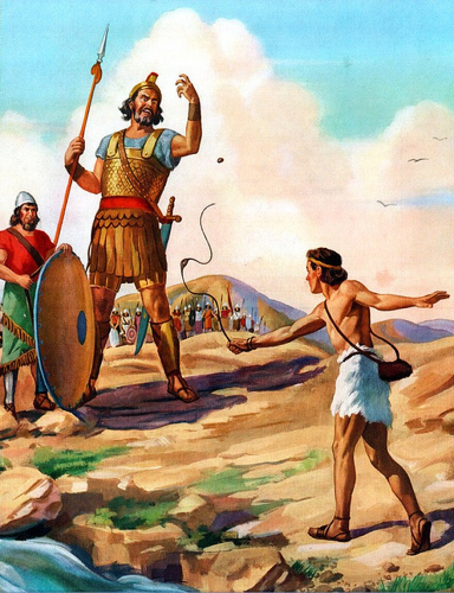
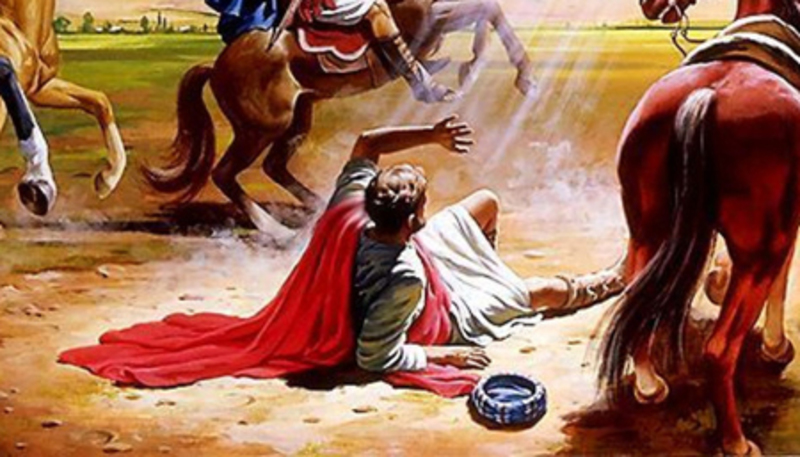
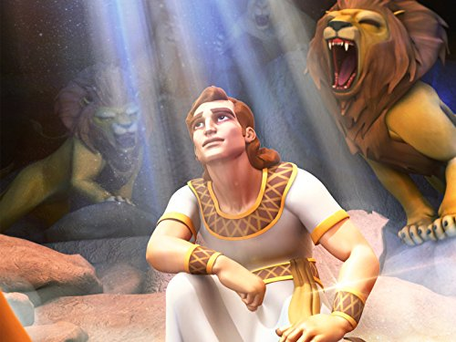

Back
Trust in the LORD with all your heart, and do not lean on your own understanding. In all your ways acknowledge Him, and He will make straight your paths. -Proverbs 3:5–6
And without faith it is impossible to please God, because anyone who comes to him must believe that he exists and that he rewards those who earnestly seek him. -2 Corinthians 5-7
My command is this: Love each other as I have loved you. -John 15:12
For if we live, we live to the Lord, and if we die, we die to the Lord. So then, whether we live or whether we die, we are the Lord's.” The Good News: Devoting yourself to God in life is the way to live an honest and happy life. All the choices you make in your life should be made for His honor. -Romans 14:8
If we live, we live for the Lord; and if we die, we die for the Lord. So, whether we live or die, we belong to the Lord.-Romans 14:8
For God so loved the world that he gave his one and only Son, that whoever believes in him shall not perish but have eternal life. -John 3:16
I am the way and the truth and the life. No one comes to the Father except through me. -John 14:6
About

The Word of God gives Hope
Isaiah 40:31 "But those who hope in the Lord will renew their strength. They will soar on wings like eagles; they will run and not grow weary, they will walk and not be faint.
The Word of God is a Weapon
Hebrews 4:12 says, “For the word of God is alive and active. Sharper than any double-edged sword, it penetrates even to dividing soul and spirit, joints and marrow; it judges the thoughts and attitudes of the heart.”
The Word of God can Change you
Ezekiel 36:26, I will give you a new heart and put a new spirit in you; I will remove from you your heart of stone and give you a heart of flesh.
The Word of God makes you feel loved
John 3:16, For God so loved the world that he gave his one and only Son, that whoever believes in him shall not perish but have eternal life.
The Word of God helps us to Forgive
Ephesians 4:32, “Be kind and compassionate to one another, forgiving each other, just as in Christ God forgave you.”
The Word of God will guide you
Isaiah 58:11, The LORD will guide you always; he will satisfy your needs in a sun-scorched land and will strengthen your frame. You will be like a well-watered garden, like a spring whose waters never fail.
The Word of God will Help you not to be Afraid
Isaiah 41:10, “do not fear, for I am with you, do not be afraid, for I am your God; I will strengthen you, I will help you, I will uphold you with my victorious right hand.” Isaiah 41:13 “For I, the LORD your God, hold your right hand; it is I who say to you, 'Do not fear, I will help you
Related Stories

-Noah was instructed to build an ark, and in accordance with God's instructions he took into the ark male and female specimens of all the world's species of animals, from which the stocks might be replenished. Consequently, according to this narrative, the entire surviving human race descended from Noah's three sons.

-MOSES was first introduced to us as a baby floating in the Nile River. After being placed in a basket and put on to the Nile, he was spotted by the Pharaoh's daughter and rescued. He lived as a prince in Egypt and befriended 7 women who were being bullied by shepherds. One day, he received a call from God, who told him about the people who were suffering and how he wanted to bring them to "a land of milk and honey". God wanted MOSES to let his people go, but at the same time, he was going to harden the Pharaoh's heart. MOSES was a great prophet chosen by God to lead the Israelites out of slavery in Egypt. He encountered many hardships, such as the EGYPTIAN ARMIES and the RED SEA, but was always followed by God. When they finally reached the promised land, many of the people were not able to enter due to the sins they had created. MOSES had broken a rock in order to get water, much to God's dismay. He was given the hard task of persuading the Pharaoh to let the Israelites go.

-A religious dramatic miniseries about God's creation and physical landmark events leading up to the Crucifixion and Resurrection of Jesus Christ.

-David took out a stone from his bag. He put it in his sling and swung the sling. The stone flew from the sling and hit Goliath right between the eyes. The stone sank deep into his head, and Goliath fell to the ground—face down.

-From Saul to Paul, The conversion of Paul the Apostle (also the Pauline conversion, Damascene conversion, Damascus Christophany and the "road to Damascus" event) was, according to the New Testament, an event in the life of Saul/Paul the Apostle that led him to cease persecuting early Christians and to become a follower of Jesus.

-Daniel in the lions' den (chapter 6 of the Book of Daniel) tells of how the biblical Daniel is saved from lions by the God of Israel "because I was found blameless before him" (Daniel 6:22).
Back to top